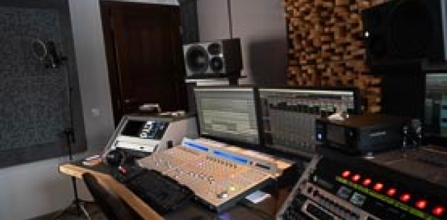
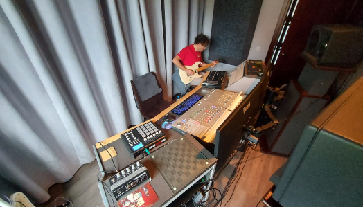
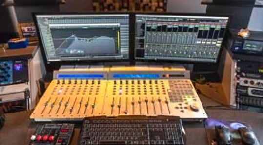

Nowoczesne studio
Zaprojektowane w profesjonalnie przygotowanym pomieszczeniu z wykorzystaniem

Adaptacja akustyczna reżyserki w połączeniu z monitorami Neumann
tworzy zrównoważony balans tonalny oraz niesamowicie realną scenę
dźwiękową, gdzie tworzenie obrazów 3d przy użyciu dostępnego
oprogramowania staje po prostu łatwe


W studiu można dokonać:
- rejestracji śladów audio.
- edycji nagranego materiału.
- zgrania nagranych śladów.
- montażu i masteringu.
Przy użyciu dostępnych narzędzi możliwe jest również:
- tworzenie muzyki
-realizacji nagrań lektorskich
-audiobooków
-nagrywanie audycji dźwiękowych dla dzieci i dorosłych
Dodatkowo można wykonać profesjonalną sesję zdjęciową,
ponieważ te pomieszczenia to również atelier foto -
kbkadry - Katarzyny Błaszczyk-Kamińskiej.